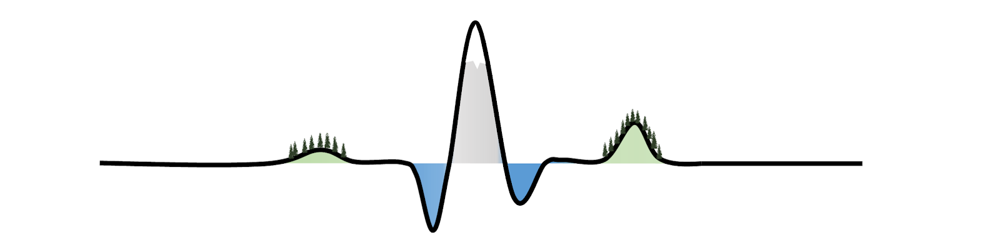

6th International Workshop on High Temporal Resolution Water Quality Monitoring and Analysis
2nd to 4th September 2026
Freiburg, Germany
***ABSTRACT SUBMISSION DEADLINE EXTENDED UNTIL 12th April 2026***
We are delighted to invite the global hydrology community to the 6th International Workshop on High-Temporal Resolution Water Quality Monitoring and Analysis.
Join us at the University of Freiburg, Germany, for three days dedicated to bridging the gap between emerging high-frequency measurements and smart analytics!
Why you should attend
The workshop will focus on three key themes that are shaping the future of water quality monitoring and analysis:
- Emerging High-Frequency Measurements: From the stream channel to the whole catchment.
- Smart Analytics: Machine learning and beyond for high-frequency water quality data.
- Spatio-Temporal Patterns: Increasing data in space and time to detect trends and changes.
Keynotes will be given by:
- Prof. Dr. Julia Knapp (University of Bayreuth, Germany): From Signals to Inference: Making the Most of High Frequency Water Quality Data for Event Scale Analysis
- Dr. Joachim Rozemeijer (Deltares, Netherlands): Best practice in high-frequency water quality monitoring and application to support a spatial targeting approach in two agricultural catchments
Registration fees will be just 120€ for regular attendees and 80€ for PhD students
This includes participation in all activities, lunch and coffee breaks, and the conference dinner at the Schloss Cafe with stunning views over Freiburg.Call for Abstracts
We are now welcoming abstract submissions with an EXTENDED DEADLINE of 12th April 2026.
We encourage contributions that align with the workshop themes above, but we also welcome innovative ideas that push the boundaries of high-frequency water quality monitoring and analysis.
Please submit your abstract via the following link: Abstract Submission Form
Questions and Further Information
Please let us know if you have further questions at: workshop-hf-waterquality@hydrology.uni-freiburg.de
Find out about past editions of the workshop here
Already know you are attending?
Join our LinkedIn event and share with your network!
Organising Committee
The 2026 edition of the workshop is brought to you by:
- Dr. Carolin Winter (University of Freiburg, Germany)
- Dr. Aaron Neill (JLU Giessen, Germany)
- Walter Hettler (University of Freiburg, Germany)
- Jessica Fröbel (University of Freiburg, Germany)
- Fabian Nikq (University of Freiburg, Germany)